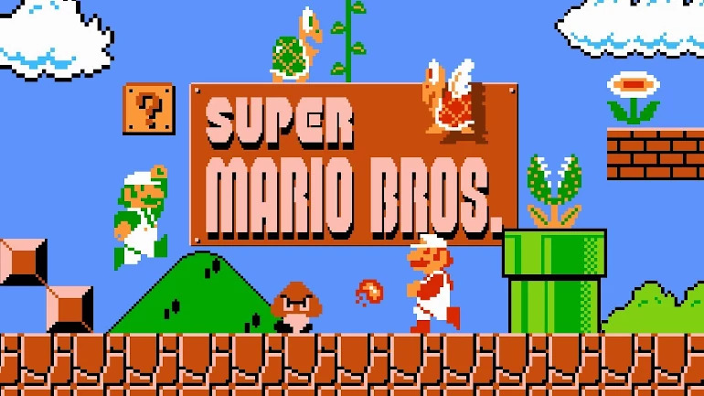

Mario
Super Mario Bros cambió la forma de entender las plataformas en los años ochenta. Con un control muy preciso y niveles llenos de secretos, logró rescatar a la industria y convertir a su protagonista en un icono mundial .

Información general
| Dato | Descripción | Enlace |
|---|---|---|
| Año de lanzamiento | 1985 | Ver más en Wikipedia |
| Creador | Shigeru Miyamoto | |
| Plataforma estrella | NES |